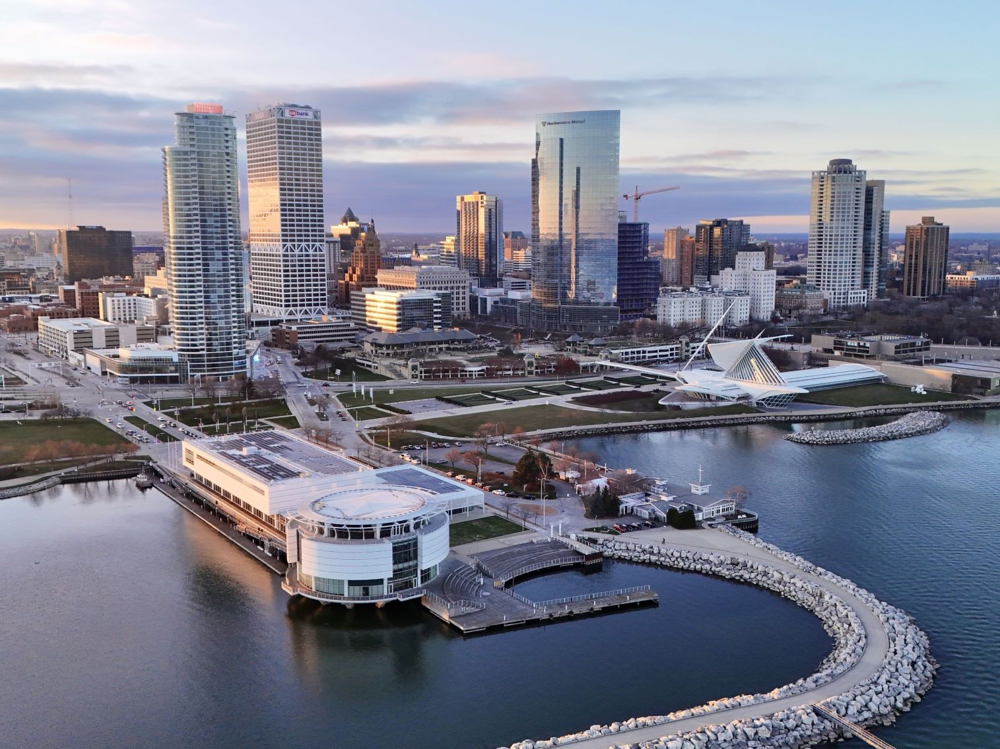
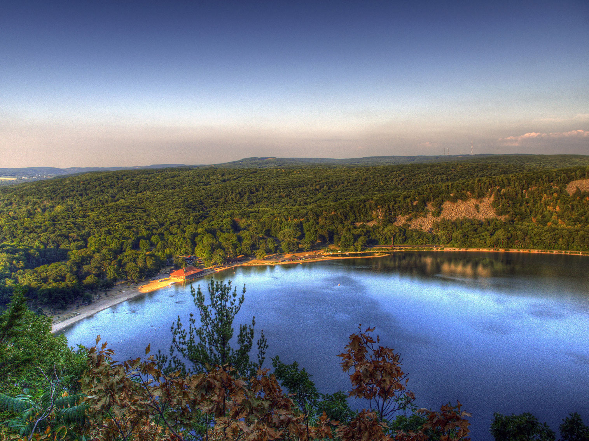

.jpg){kind=link}
Wisconsin Travel Guide
Sample cheese and craft beer in America's Dairyland, explore Milwaukee's lakefront, and relax along Wisconsin's Lake Michigan shoreline.
Places to See in Wisconsin

Madison City Skyline in WinterYinan Chen, Public Domain, via Wikimedia Commons; Image Size Adjusted


Devils Lake State Park
CrispAir at en.wikipedia, CC BY 3.0, via Wikimedia Commons; Image Size Adjusted

Wisconsin State Parks

Apostle Islands National Lakeshore
Tim Wilson from Blaine, MN, USA, CC BY 2.0, via Wikimedia Commons; Image Size Adjusted
Landmarks and Landscapes
Overview
Wisconsin is a Great Lakes state of about 5.9 million people, known for dairy farms, lakes, forests, and breweries. Madison is the capital, Milwaukee is the largest city, and the state's name comes from an Ojibwe word for the Wisconsin River. Its nickname is the "Badger State."
Visitors come for the beaches and lighthouses of Door County, the water parks of Wisconsin Dells, the architecture of Frank Lloyd Wright at Taliesin, and the quirky House on the Rock. Others come for the sea caves and islands of the Apostle Islands, the lakes and forests of the north, the festivals and breweries of Milwaukee, and cheese curds, supper clubs, and the Green Bay Packers.
Geography
Wisconsin is bordered by Lake Michigan on the east and Lake Superior on the north. Glaciers shaped most of the state, leaving rolling hills, thousands of lakes, and kettle moraines, while the Driftless Area in the southwest was untouched and has steep bluffs and valleys. The northern forests contain much of the state's woodland and lakes, and the Mississippi and St. Croix Rivers form the western border. Timms Hill, at 1,951 feet (595 m), is the highest point.
History
The Ho-Chunk, Menominee, Ojibwe, Potawatomi, and other peoples lived in the region when French explorer Jean Nicolet arrived in 1634. The fur trade dominated until the British and then the Americans took over, and lead mining in the southwest drew settlers in the 1820s and 1830s. Wisconsin became the 30th state in 1848, and German, Scandinavian, Polish, and other immigrants settled the farms and cities. Logging, dairy, and manufacturing built the economy, and the Progressive movement of Robert La Follette shaped national politics.
Door County
Door County is a 70-mile peninsula that separates Green Bay from Lake Michigan in northeastern Wisconsin, often called the "Cape Cod of the Midwest." It has more than 300 miles of shoreline, five state parks, and charming waterfront villages such as Ephraim, Sister Bay, and Baileys Harbor. Peninsula State Park has bluffs, a lighthouse, and a golf course, Whitefish Dunes has the tallest sand dunes on the Wisconsin shore, and Cana Island has a historic lighthouse. Visitors come for the cherry orchards, the wineries, and traditional Door County fish boils, a Scandinavian-style meal of whitefish and potatoes cooked over a fire, as well as Al Johnson's goats-on-the-roof. Washington Island, reached by ferry, has a strong Icelandic heritage. Summer and fall are the busiest seasons, and the cherry blossoms bloom in May.
Wisconsin Dells
Wisconsin Dells is the self-proclaimed "Waterpark Capital of the World," a resort town in south-central Wisconsin on the Wisconsin River, where the river has carved dramatic sandstone gorges. The town grew from a Victorian-era tourist stop where visitors rode boats through the scenic Dells of the Wisconsin River, and the Dells Boat Tours and Original Wisconsin Ducks, amphibious vehicles that drive on land and water, remain popular. Today the area has dozens of indoor and outdoor water parks, including Noah's Ark, one of the largest in the U.S., plus Mt. Olympus, Kalahari, and Chula Vista, as well as go-karts, mini-golf, and amusement parks. Nearby Devil's Lake State Park offers hiking and rock climbing, and the House on the Rock is a short drive away. The busiest season is summer, but the large indoor water parks stay open in winter.
Milwaukee
Milwaukee is Wisconsin's largest city, on the western shore of Lake Michigan, and is known for its German heritage, breweries, festivals, and lakefront. It was once the beer capital of the world, with names such as Pabst, Schlitz, and Miller, and the Best Place at the Historic Pabst Brewery and the Pabst Mansion recall that era. The Milwaukee Art Museum has a striking building by Santiago Calatrava with a moving sunshade called the Quadracci Pavilion, and the Harley-Davidson Museum celebrates the motorcycle brand founded in the city in 1903. The Milwaukee Public Museum, the Mitchell Park Domes, the Riverwalk, the Historic Third Ward, and the Public Market are other highlights. Summerfest, the "World's Largest Music Festival," takes place every summer on the lakefront.
Madison
Madison, the state capital, is built on an isthmus between Lake Mendota and Lake Monona and is home to the University of Wisconsin-Madison. The Wisconsin State Capitol, a white granite building with the only granite dome in the U.S., anchors the city, and the lively State Street connects it to the university campus. The Monona Terrace, a convention center based on a design by Frank Lloyd Wright, has a rooftop garden above Lake Monona, and the Olbrich Botanical Gardens, the Chazen Museum of Art, and the Memorial Union Terrace, with its colorful sunburst chairs, are among the best places to relax. Madison is known for its Saturday Dane County Farmers' Market around the Capitol, one of the largest producer-only farmers' markets in the country, its cheese curds, and Badgers football games.
National Protected Areas
Wisconsin's national park sites include the Apostle Islands National Lakeshore, with 21 islands, sea caves, and lighthouses on Lake Superior. The Ice Age National Scenic Trail follows the edge of the last glaciation across the state, the North Country National Scenic Trail crosses the north, and the Saint Croix National Scenic Riverway and the Upper Mississippi River National Wildlife and Fish Refuge protect waterways on the western border. The Ice Age National Scientific Reserve also preserves glacial landforms.
State Parks and Historic Sites
Wisconsin has more than 60 state parks. Devil's Lake has quartzite bluffs, Copper Falls has waterfalls and a gorge, Governor Dodge has hills and lakes, and Willow River has a waterfall near Hudson. Door County has Peninsula, Whitefish Dunes, and Newport State Parks. Visitors also enjoy Geneva Lake and the National Shrine at Holy Hill.
Seasons and When to Visit
Summer is busy in Door County, the Dells, and the northern lakes, with beaches, boating, and festivals including Summerfest in Milwaukee. Fall is a favorite for foliage, apple orchards, and cheese tours, and winter is cold and snowy, with skiing, snowmobiling, ice fishing, and Packers games at Lambeau Field. Spring brings maple syrup season, cherry blossoms in Door County, and waterfalls at their strongest.
This article uses material from the Wikipedia article "Wisconsin", which is released under the Creative Commons Attribution-Share-Alike License 3.0. Additional information was drawn from National Park Service, Wisconsin State Parks, and Travel Wisconsin.